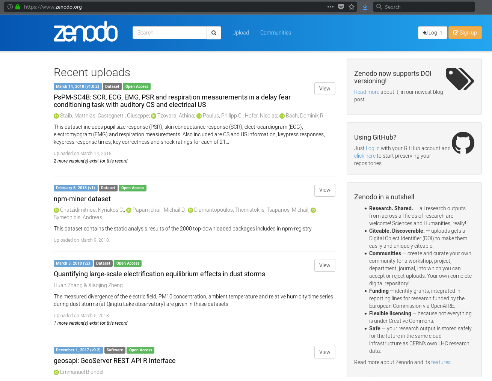
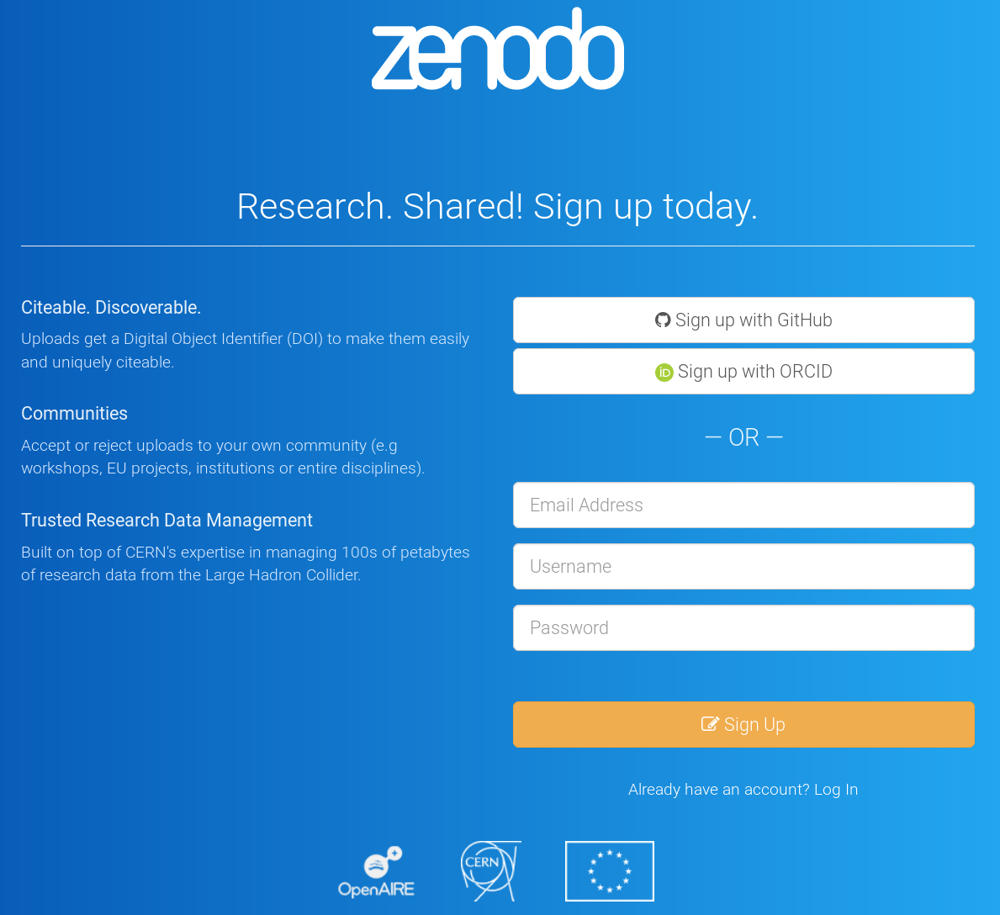
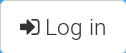
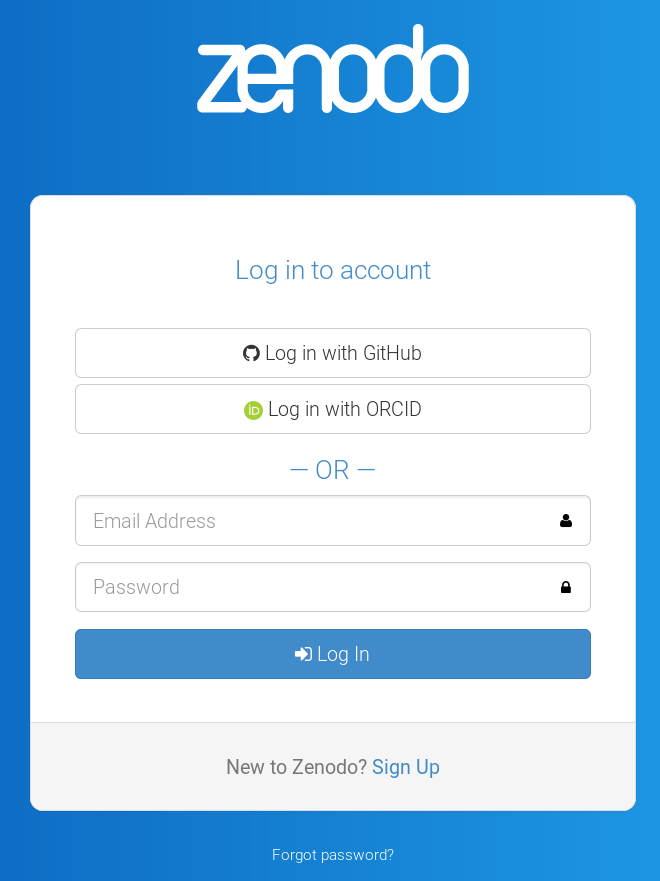
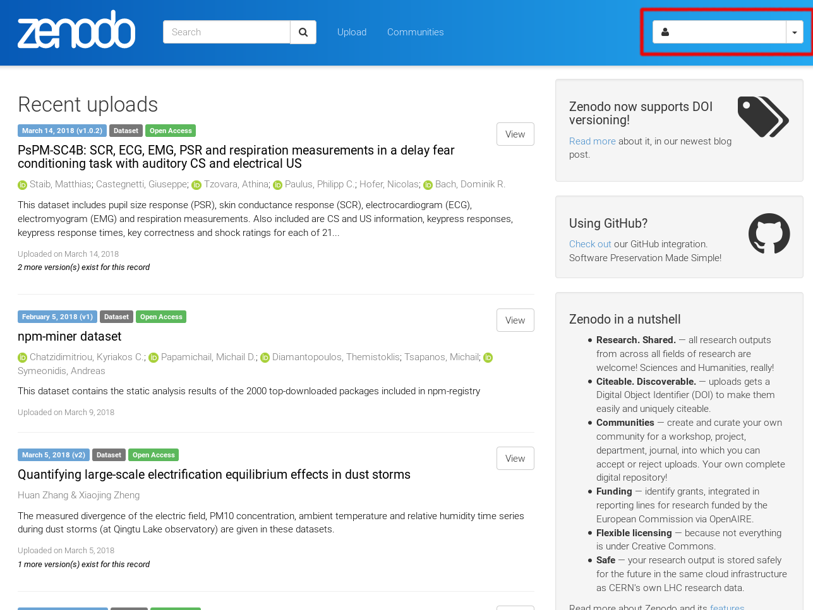
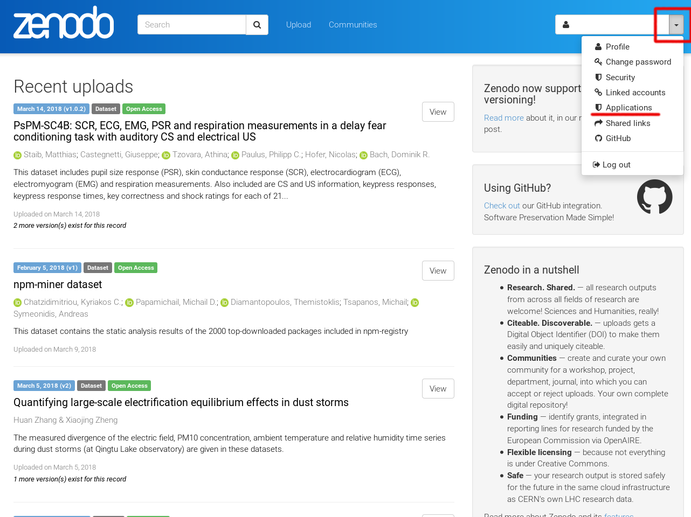
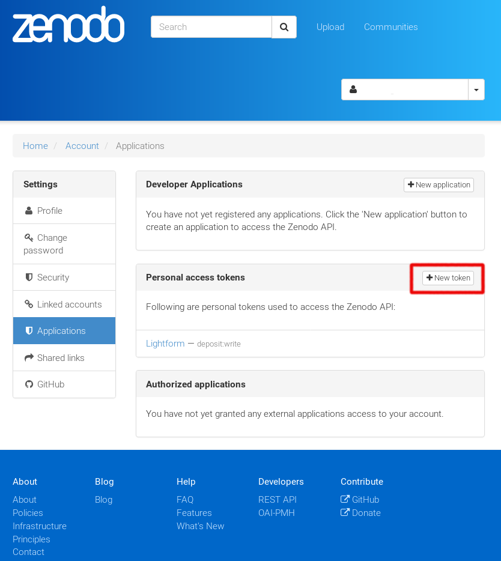
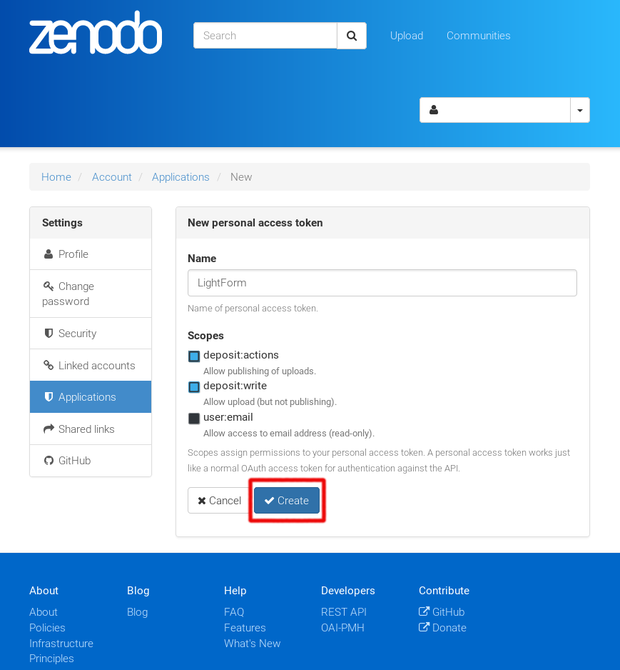
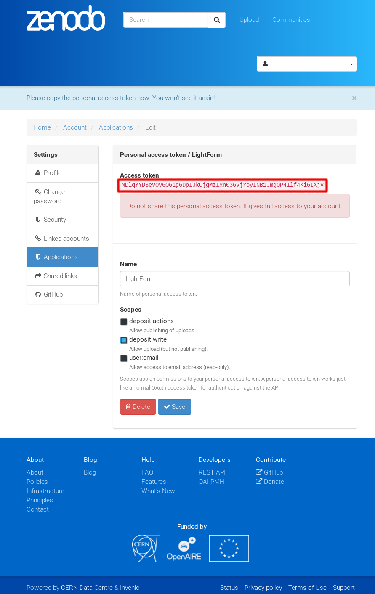

The first step to upload or search data related to a specific communities on Zenodo is to create an account on the plateform. This step does not depend on the application use to realise these operations.
It is free to create an account and that will allows researcher to link their ORCID accout with the Zenodo’s if needed.
Open your browser and go to zenodo webpage:
If you do not already have a Zenodo account click on the sign up button:
It is possible to create a Zenodo account or to use your credential from Github or ORCID.
When it is done or if you already have a Zenodo account, you can login on it by clicking on the login button:
That will let you arrive to the following page where you will fill your credential to access the website:
When it is done you have access to the full Zenodo capacity, that you can access next to your login name (red rectangle):
To be able to use datalight we need to create a personal token to access to it.
Warning
The token will be personal and should not be shared with anybody. Data publish on Zenodo using that token are the responsability of the token owner.
The procedure to create the token is, click on the small arrow next to your login name (red square). A menu will open with different option. Click on the Applications (uderlied in red).
That will open a new page were you can create a new token by clicking on the New token button (red square):
You have to give a name to the token (e.g. ZenodoToken), you can also choose which action can be done using that token:
To use datalight you need to have at least the option deposit:write* checked. The publication of the deposit could be done through the web interface or by using another token with the option **deposit:actions checked.
By clicking the button Create, Zenodo will create a token which is an alphanumerical lists of characters:
Warning
This token will be given only one time so please copy it somewhere you can keep it. If you already have installed datalight you can provide the token the first time you are using it. This token will be saved in a read-only file in the user directory for future usage.
{kind=link}
{kind=link}
{kind=link}
{kind=link}
{kind=link}
{kind=link}
{kind=link}
{kind=link}
{kind=link}
{kind=link}